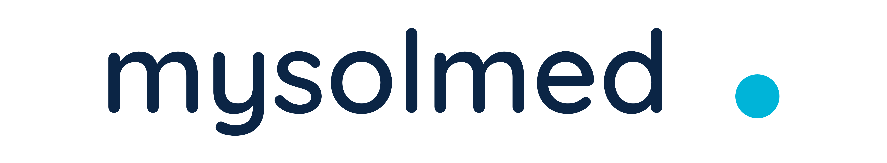
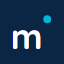

全站统一标识 · 一个图形标（m + 青点）× 多底色版本 × SVG 矢量 + PNG 位图
所有版本严格使用以下品牌色，文字为 Quicksand 圆润字形，青点为品牌记忆点。
#0B2545#00B4D8#FFFFFF用于登录页、宣传页、打印封面、页头等「需要完整品牌名」的位置。优先用 SVG 矢量。

用于侧边栏、移动端导航、头像位、加载页等「小尺寸 / 方形」位置。

浏览器标签页、收藏夹、手机主屏图标。自带藏青底，任何底色都清晰。

favicon 16同一图形标在常见底色上的表现：浅底用藏青版，深底 / 照片底用反白版，青底用藏青版。
mark / wordmark（藏青）；背景明度低（藏青 / 黑 / 深照片）用 *-white（反白）。青点在所有版本中保持 #00B4D8 不变，是品牌记忆点。禁止在藏青底上再放藏青 logo、或在白底上放反白 logo（会看不见）。每个出现 logo 的位置统一用哪一版，全部来自本资产库（同一图形标、同一字形、同一色值）。
| 场景 / 位置 | 底色 | 使用版本 | 文件 |
|---|---|---|---|
| PC 业务前台登录页（英雄区） | 深色渐变 | 图形标 · 反白 | mysolmed-mark-white（配「MySolMed DMS」文字） |
| PC 侧边栏（浅色主题） | 白 / 浅灰 | 图形标 · 藏青 | mysolmed-mark |
| PC 侧边栏（深色主题） | 深藏青 | 图形标 · 反白 | mysolmed-mark-white |
| 平台后台登录 / 侧边栏 | 同上规则 | 图形标（按底色） | mysolmed-mark[-white] |
| 移动端 H5 登录页 | 浅底 | 图形标 · 藏青（大尺寸） | mysolmed-mark-512 |
| 移动端首页 / 我的页头部 | 深/浅按主题 | 图形标（按底色） | mysolmed-mark[-white] |
| 宣传手册 PC 首页页眉 | 白 / 深色横幅 | 字标（藏青或反白） | mysolmed-wordmark[-white] |
| 宣传手册移动版顶栏 | 透明→白滚动 | 字标（反白→藏青自适应） | mysolmed-wordmark[-white] |
| 宣传打印版封面 / 页眉 | 深藏青封面 | 字标 · 反白 | mysolmed-wordmark-white |
| 浏览器标签页 / 收藏夹 | — | App 图标（藏青底） | favicon-16/32/48.png + favicon.svg |
| 手机主屏图标 / PWA | — | App 图标（藏青底） | apple-touch-icon.png / mysolmed-appicon-192/512 |
| 黑白打印 / 传真 / 水印 | 白 | 单色版 | mysolmed-wordmark-mono / mysolmed-mark-mono |
目录：brand-logo/。SVG 为矢量源文件（已内嵌字体，任意放大不失真）；PNG 为位图，按文件名尺寸取用。
| 类别 | SVG（矢量，推荐） | PNG（位图） |
|---|---|---|
| 横版字标 | mysolmed-wordmark.svg / -white / -mono | mysolmed-wordmark-128/256.png、-white-128/256.png |
| 图形标 | mysolmed-mark.svg / -white / -mono | mysolmed-mark-128/256/512.png、-white-128/256/512.png |
| App 图标 | favicon.svg、mysolmed-appicon.svg | favicon-16/32/48.png、apple-touch-icon.png(180)、mysolmed-appicon-192/512.png |
node brand-logo/tools/generate-logos.cjs。